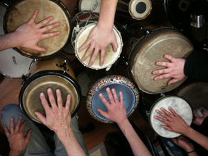

What is the Beat Brigade?
The HandReach Beat Brigade is an outreach program that formed to provide significant training and experience in therapeutic drumming for youth and adults from diverse backgrounds, who travel locally and abroad to facilitate healing drum circles for trauma survivors. Formed under the leadership of Bill Jenkins in Washington, DC, and now settled in Boston under the direction of drummer Martin Isaac, the Beat Brigade serves as a learning laboratory for musicians, healers, youth, and trauma survivors of all ages to explore modalities of healing through rhythm and song.
Stories from the Field
In a society in which traditional family and community-based systems of support have become increasingly fragmented, drumming circles provide a sense of connectedness with others and interpersonal support. A drum circle provides an opportunity to connect with your own spirit at a deeper level, and also to connect with a group of other like-minded people.
Drumming is the most amazing modality. As a physical therapist with 30 years of experience, from my perspective, drumming has the potential to transcend language, culture and age to motivate patients to combat devastating injuries. The benefits of music include mood alteration; auditory distraction; and physiology which promotes cues for movement. While working in China last summer, I witnessed music motivate a Tibetan girl with a spinal cord injury to participate in physical therapy while overcoming pain and fear of movement. This experience left me forever changed and a believer in the power of music as a modality for inclusion in a therapeutic repertoire.
How to Get Involved
The HandReach BeatBrigade welcomes new members! Anyone in the Boston area with an interest in drumming, art therapy, or working with trauma survivors, domestically or internationally, is encouraged to join us! Our current activities and training sessions are posted at: http://www.meetup.com/HandReach-BeatBrigade
To inquire about presenting at a Beat Brigade meeting or hiring the Beat Brigade for an event, please contact the Program Coordinator at brecken@handreach.org
Check out Beat Brigade on Facebook